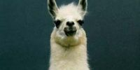

Lama glama
La llama es abundante en la Puna o Altiplano de los Andes de Perú, Bolivia, Chile, Ecuador y Argentina. Fue creado por los pueblos andinos nativos mediante selección artificial a partir del guanaco salvaje que fue domesticado y del cual, por lo tanto, la llama deriva. Según recientes estudios de ADN, esto ocurrió en principio de manera independiente en tiempo y espacio, en sectores del sur del Perú, norte de Chile, oeste de Bolivia y el norte de Argentina.
La llama es una subespecie del guanaco, por lo que comparten muchas características, posee un cuello largo y delgado y un pelaje grueso que varía del beige oscuro hasta el blanco, aunque el patrón más común es marrón rojizo con manchas blancas o amarillas. El rostro es estrecho con orejas redondas y un labio superior hendido. Tiene 32 dientes, de los cuales sobresalen sus incisivos inferiores. Sus patas están provistas de 2 dedos con almohadilla gruesa en las plantas. Este camélido pesa de 130 a 200 kilogramos y mide aproximadamente 1.7-1.8 metros de altura.
Preocupación baja, sin peligro de extinción